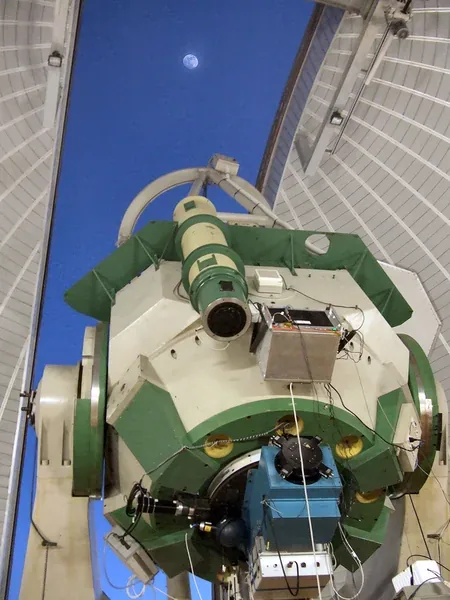

Copernico telescope

The Copernico 1.82 m on Mount Ekar (Asiago) is the largest optical telescope in Italy. It is operated by INAF – Astronomical Observatory of Padova and has been in use since 1973 for imaging, low- to medium-high resolution spectroscopy and polarimetry.
Its two regular instruments, AFOSC (spectrograph and camera) and the Echelle high-resolution spectrograph, are mounted in turn following the Moon cycle; AFOSC usually takes grey and dark time. EKARUS sits at the Coudé focus.
Source: INAF–OAPd, Copernico 1.82 m
Site and telescope
| Location | Mt. Ekar, Asiago (INAF – Asiago Astrophysical Observatory) |
|---|---|
| Coordinates | Lat. 45° 50′ 54.894″ N · Long. 11° 34′ 08.397″ E · Alt. 1376.2 m |
| Optical design | Classic Cassegrain, f/9 |
| Primary mirror (M1) | 182 cm, Schott Duran 50; re-aluminized periodically in the vacuum chamber at Mt. Ekar |
| Secondary mirror (M2) | Moves in focus (Z axis) only |
| Cassegrain focus | f/9, 12.6″/mm, about 20 cm from the rear flange; main focus |
| Nasmyth focus | 45° tertiary mirror, East side of the fork |
| Coudé focus | Hosts EKARUS; F/20.5 beam to the bench. Relay upgraded April 2026 with new L1 and L3 lenses |
| Pointing | Better than 1′ all-sky; absolute encoders with ≈ 4″ resolution |
| Dome | 15 m diameter, third floor; rotation and aperture driven by TPS, dome follows the telescope automatically |
Operating limits
| Altitude for EKARUS | 30°–88°. Below 30° dispersion degrades performance; above 80° take care, mechanical constraints near zenith. |
|---|---|
| Hard limit | Minimum altitude 20°, set by software and limit switch; never drive the telescope there. |
| Humidity | 90%: keep the dome closed. 95%: close immediately (automatic alert). |
| Wind | 10 m/s: keep the dome closed. |